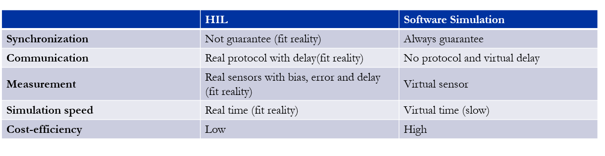
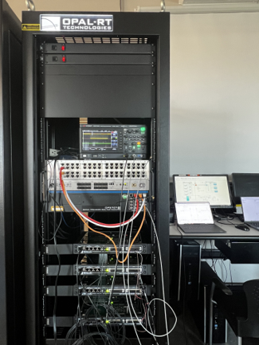
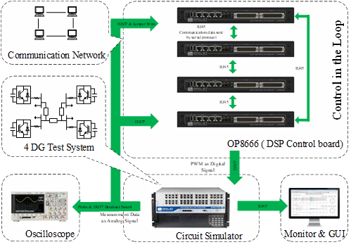
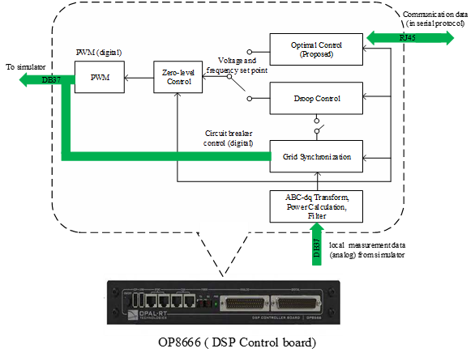
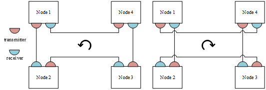
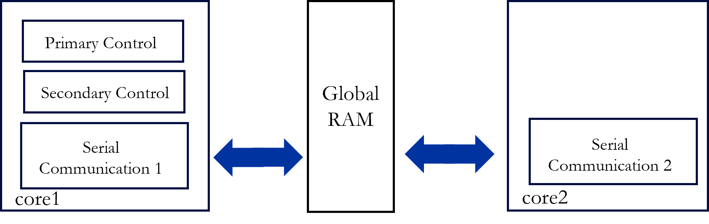
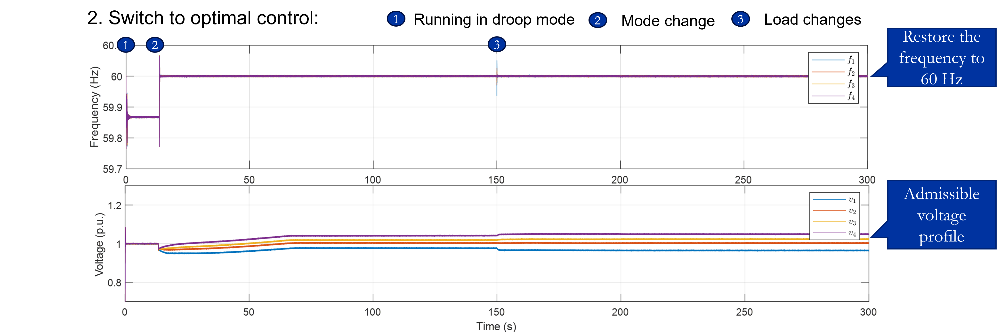
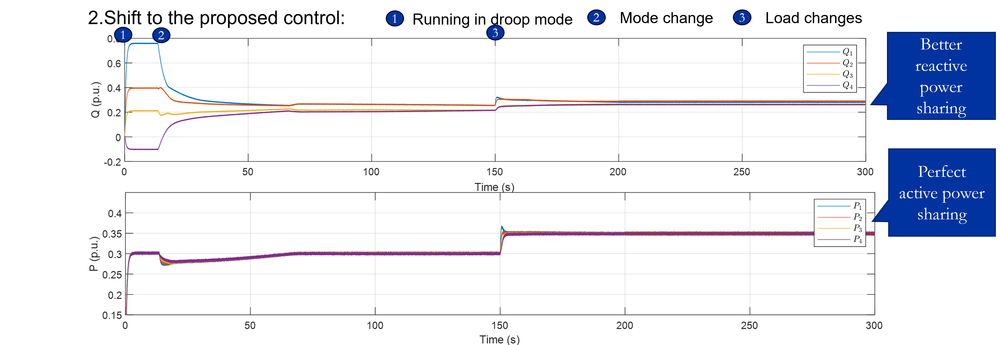

What is HIL Simulation?
A simulation with real hardware such as controller and inverter.
Why HIL Simulation?
HIL is closer to reality.

Testbed Structure
- Testbed Overview

- System Data Flow

- Simulator: Models the inverters, measurements, and the power grid in real-time manner.
- OP8666: DSP Controller.
- Monitor and Oscilloscope: Data Monitoring.
Control Structure

- Zero-level control: tracks the control set points.
- Grid synchronization control: mitigates the impulse current when an inverter is connected to the grid.
- Droop control: supports the grid voltage and frequency without communication (time step: 50 𝜇s).
- Optimal secondary control: optimizes the system’s voltage and frequency, and achieves proportional power sharing (time step: 0.025s).
Bidirectional Communication

-
Bidirectional communication: use two sets of transmitters and receivers. One set of the ports performs counterclockwise communication while the other set performs clockwise communication. Time step: 0.025s.
Cores Assignment

- Problem: limited computational resources: some tasks will be skipped if tasks cannot be done in one interval.
- Method: two-core framework:
- Core1: primary control, secondary control and clockwise communication.
- Core2: counterclockwise communication.
- Communication between core1 and core2 by global RAM.
Simulation Results
System under Droop Mode

Switch to Optimal Control


- Better active and reactive power and system frequency can be achieved.
Update: first upload 02/23/2025